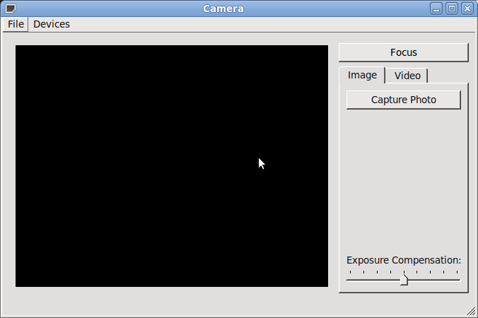

Camera Example
The Camera Example shows how to use the API to capture a still image or video.
The Camera Example demonstrates how you can use Qt Multimedia to implement some basic Camera functionality to take still images and record video clips with audio.
Running the Example
To run the example from Qt Creator, open the Welcome mode and select the example from Examples. For more information, visit Building and Running an Example.
A Camera class is created that will act as our Camera. It has a user interface, control functions, setting values and a means of defining the location where the image or video clip is to be saved. It will also store the image and video settings.
The Camera class contains an instance of QCamera, the API class interface to the hardware. It also has an instance of QCameraImageCapture to take still images and an instance of QMediaRecorder to record video. It also contains the user interface object.
The Camera constructor does some basic initialization. The camera object is set to '0', the user interface is initialized and UI signal are connected to slots that react to the triggering event. However, most of the work is done when the setCamera() function is called, passing in a QByteArray.
setCamera() sets up various connections between the user interface and the functionality of the Camera class using signals and slots. It also instantiates and initializes the QCamera, QCameraImageCapture and QMediaRecorder objects mentioned above. The still and video recording visual tabs are enabled and finally the start() function of the QCamera object is called.
Now that the camera is ready for user commands it waits for a suitable event. Such an event will be the key press of either the Qt::Key_CameraFocus or Qt::Key_Camera buttons on the application window. Camera focus will simply display the viewfinder and lock the camera settings. Key_Camera will either call takeImage() if the captureMode() is QCamera::CaptureStillImage, or if the capture mode is for video then one of two actions will occur. If the recording state shows that we are currently recording then the stop() function is called resulting in a call to QCamera::stop(), whereas if we are not recording then a video recording is started with a call to QMediaRecorder::record().
